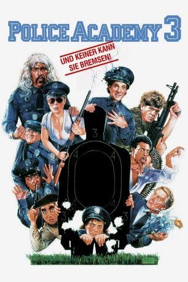
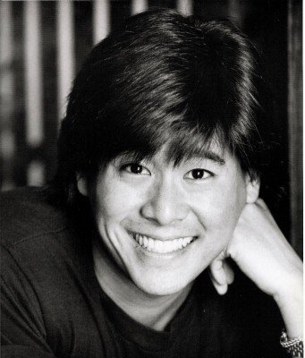

#7322 Police Academy 3 - ...und keiner kann sie bremsen
Alternativ: Police Academy 3: Back in Training
 
 IMDB-Wertung: 5.2 / 10
IMDB-Wertung: 5.2 / 10  Metascore: 0
Metascore: 0 
Im Wettstreit treten Mausers stramm trainierte Angeber und Lassards beknackte Horrortruppe an. Dem wachsamen Auge des Bewertungskommitees entgeht natürlich nicht, wie superblöd sich Lassards Neulinge anstellen. Die zukünftigen Cops kann wirklich keiner bremsen: zu früh losgelassen, sorgen sie fürs totale Chaos...
Jahr: 1986
Dauer: 83 Minuten
FSK: 6
Land: USA Studio: Warner Bros.Tonspuren:
Untertitel:
Auflösung: 720p (1280x720) Größe: 3358 MB
Genre: Komödie
Regisseur:  Jerry Paris
Jerry Paris
Drehbuch: Neal Israel
Soundtrack:
Darsteller:
 Steve Guttenberg als Sgt. Mahoney
Steve Guttenberg als Sgt. Mahoney Bubba Smith als Sgt. Hightower
Bubba Smith als Sgt. Hightower David Graf als Sgt. Tackleberry
David Graf als Sgt. Tackleberry Michael Winslow als Sgt. Jones
Michael Winslow als Sgt. Jones Marion Ramsey als Sgt. Hooks
Marion Ramsey als Sgt. Hooks Leslie Easterbrook als Lt. Callahan
Leslie Easterbrook als Lt. Callahan- Art Metrano als Comdt. Mauser
 Tim Kazurinsky als Cadet Sweetchuck
Tim Kazurinsky als Cadet Sweetchuck Bobcat Goldthwait als Cadet Zed
Bobcat Goldthwait als Cadet Zed George Gaynes als Comdt. Lassard
George Gaynes als Comdt. Lassard- Shawn Weatherly als Cadet Adams
- Ed Nelson als Governor Neilson
- Debralee Scott als Cadet Fackler
 Lance Kinsey als Lt. Proctor
Lance Kinsey als Lt. Proctor-  Brian Tochi als Cadet Nogata
 George R. Robertson als Chief Hurst
George R. Robertson als Chief Hurst- Georgina Spelvin als The Hooker
 David Huband als Cadet Hedges
David Huband als Cadet Hedges- David James Elliott als Cadet Baxter #2
- Jack Creley als Mr. Bellows
 Doug Lennox als Axe Murderer
Doug Lennox als Axe Murderer- Theo Caesar als Tommy
- Elias Zarou als Hotel Manager
- Tye Tyukodi als Purse Snatcher
- Jerry Paris als Priest in Police Line-up , uncredited
- T.J. Scott als Robber , uncredited
 Scott Thomson als Sgt. Copeland
Scott Thomson als Sgt. Copeland- Brant von Hoffman als Sgt. Blanks
 Bruce Mahler als Sgt. Fackler
Bruce Mahler als Sgt. Fackler- Andrew Paris als Cadet Kirkland
- R. Christopher Thomas als Cadet Baxter #1
- Arthur Batanides als Mr. Kirkland
- Rita Tuckett als Ms. Tyler
- Chas Lawther als Mr. Delaney
- Lyn Jackson als Ms. Click
- Mary Ann Coles als Mrs. Hurst
- Sam Stone als Cabbie
- Grant Cowan als Line-Up Room Victim
- Bruce Pirie als Line-Up Room Cop
- Susan DeRyck als Basketball Player
- Marcia Watkins als Sarah
- Pam Hyatt als Sarah's Mother
- Fran Gebhard als Woman at Cafe
- Les Nirenberg als Man with Cigar
- Gloria Summers als Maid
- Fred Livingstone als Elderly Man
- Gladys O'Connor als Woman at Phone Booth
- Gary Flanagan als Bartender
- Pierre Berube als Boy on Bicycle
- Peter Colvey als Gang Member #1
Datei: X:\7+mehr(A-Z)\Police Academy\Police Academy 3 - ...und keiner kann sie bremsen (1986, FSK6, 1280x720).mkv seit 16.10.2017
Festplatte: HD Collection-7+mehr(A-Z)+Person
 Es gibt insgesamt 10 Filme in der Gruppe '7+mehr(A-Z)\Police Academy'
Es gibt insgesamt 10 Filme in der Gruppe '7+mehr(A-Z)\Police Academy'